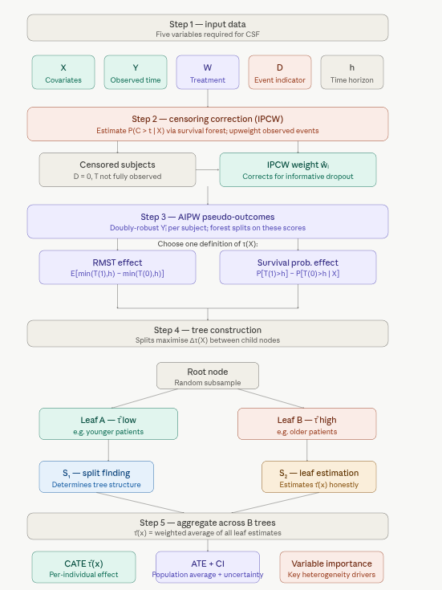
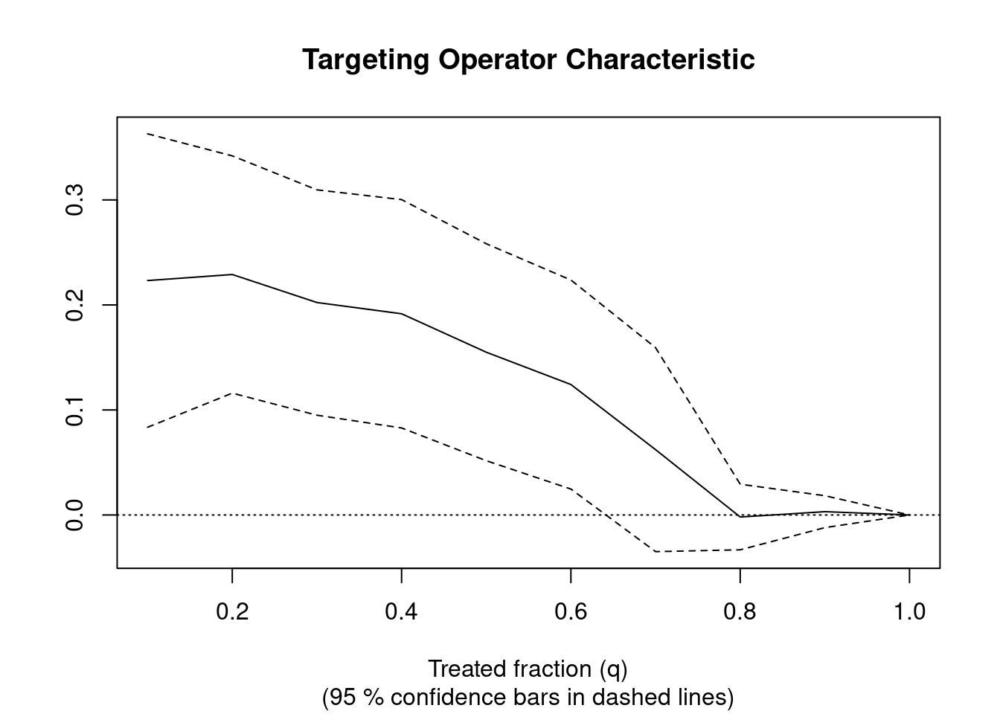
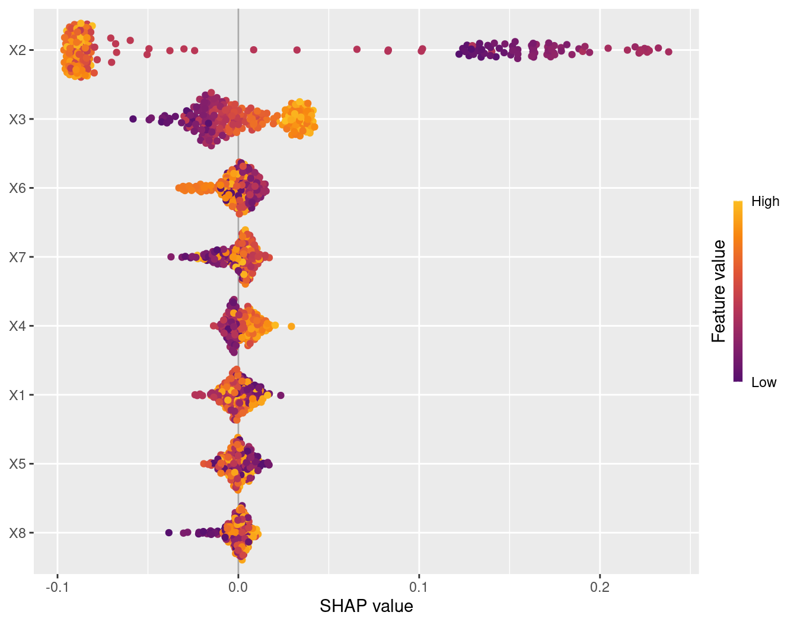
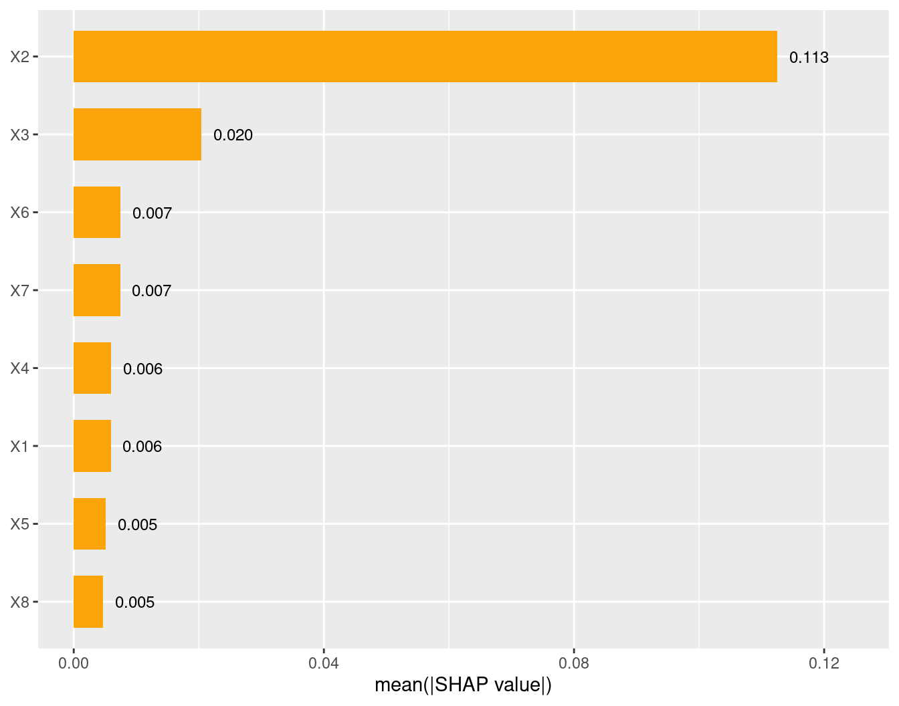
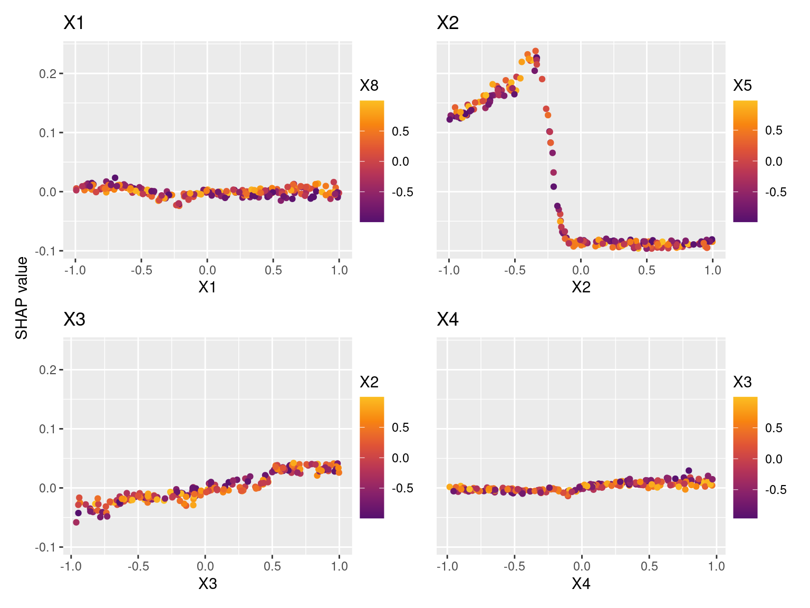
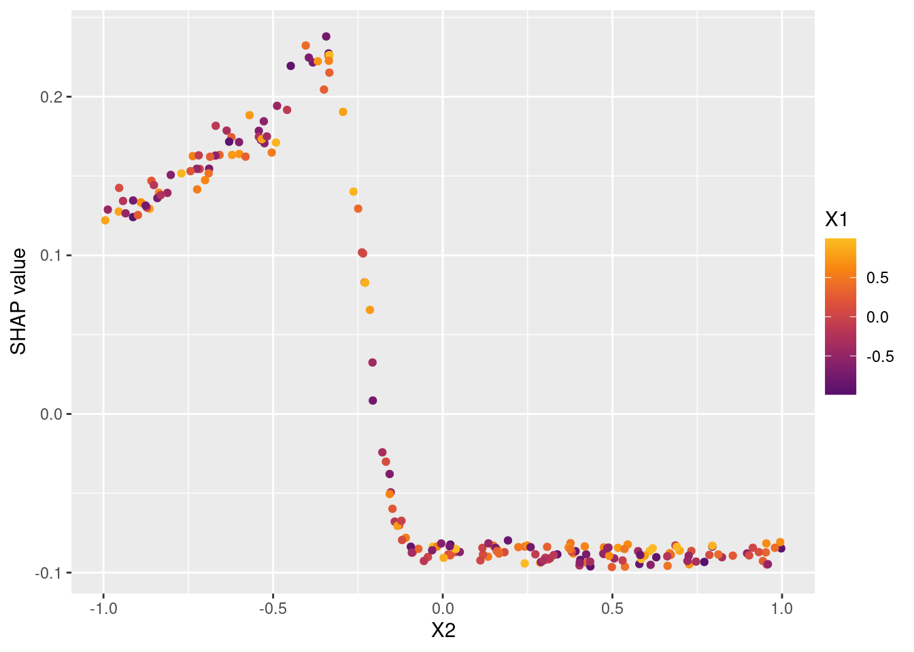
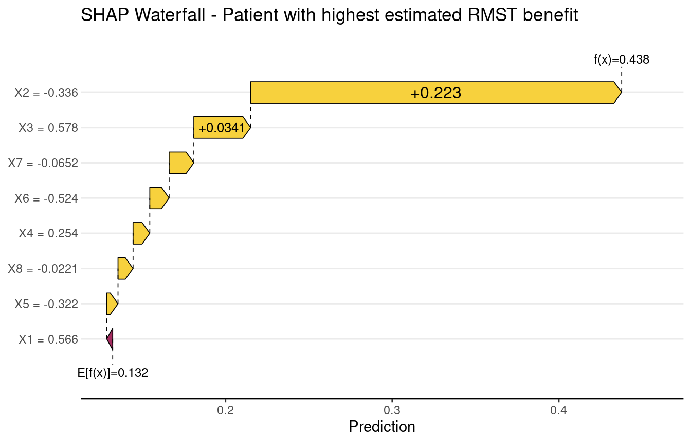
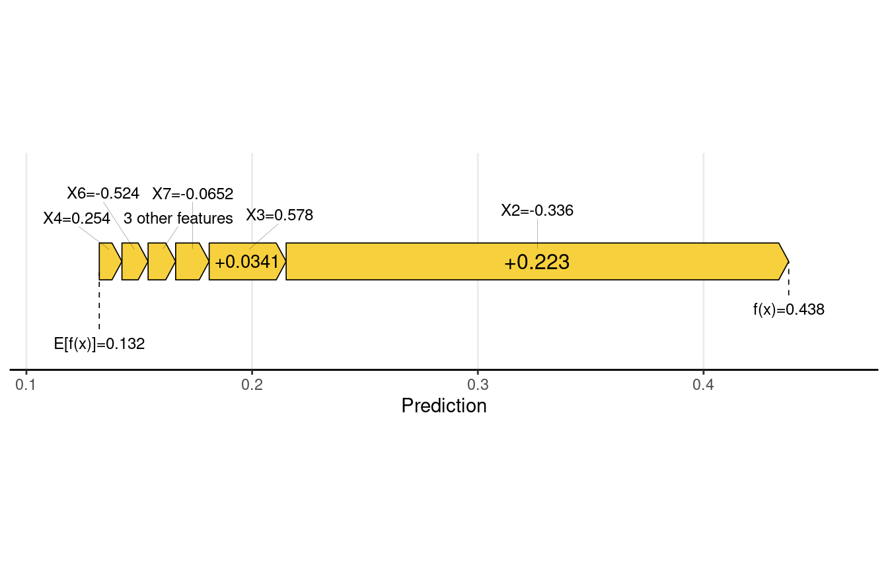
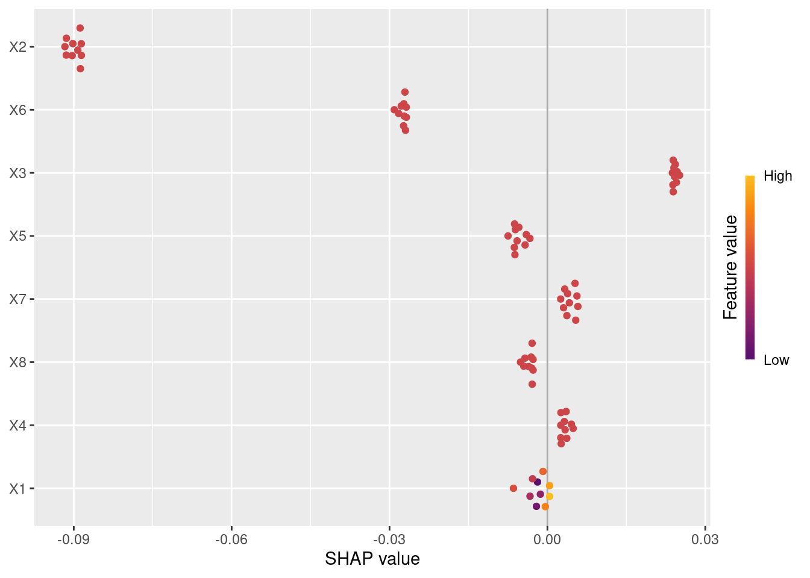

Code
packages <- c(
"tidyverse",
"plyr",
"RCausalML",
"causaldata",
"mlbench",
"survival",
"BART",
"grf",
"kernelshap",
"shapviz"
)

This section demonstrates how to use the Causal Survival Forest (CSF) from the RCausalML package in R to estimate heterogeneous treatment effects on survival data, particularly when outcomes are right-censored. The example uses the ACTG175 dataset from the {BART} package, a randomized trial comparing antiretroviral regimens in HIV-infected adults (Cui et al., 2023; JRSS Series B).
A Causal Survival Forest extends causal forests to handle time-to-event data — situations where the outcome is not just what happened, but when it happened, and where many subjects are right-censored (their event time was never observed). Like its parent method, a CSF estimates the Conditional Average Treatment Effect (CATE), \(\tau(X)\), but it does so on a survival timescale rather than a simple continuous outcome.
CSFs are particularly valuable in medicine (does this drug extend survival, and for whom?), economics (when does job training lead to re-employment?), and any setting where dropout, loss to follow-up, or end-of-study cutoffs create incomplete outcome data.
Defining the treatment effect on survival data requires choosing a summary measure:
Restricted Mean Survival Time (RMST):
\[\tau(X) = E[\min(T(1), h) - \min(T(0), h) \mid X = x]\] This compares average survival time up to a fixed horizon \(h\) between treated and control groups.
Survival probability difference:
\[\tau(X) = P[T(1) > h \mid X = x] - P[T(0) > h \mid X = x]\] This compares the probability of surviving past time \(h\) under treatment versus control.
Right-censoring means we observe \(Y = \min(T, C)\) and an event indicator \(D = \mathbf{1}(T \leq C)\), where \(C\) is the censoring time. CSFs correct for this using Inverse Probability of Censoring Weighting (IPCW), which upweights observed events to account for those that were censored.
AIPW scores (Augmented Inverse Probability Weighting, from Cui et al., 2023) provide doubly-robust pseudo-outcomes for each subject, combining a direct outcome model with a propensity model. These pseudo-outcomes are what the forest actually splits on, enabling unbiased CATE estimation even with censoring.
Honest estimation — the same safeguard as in standard causal forests — partitions data so that the subsample used to find splits is strictly separate from the subsample used to estimate effects within leaves.
1. Inputs — Covariates \(X\), observed time \(Y\), treatment \(W\), event indicator \(D\), and time horizon \(h\).
2. Censoring correction — Estimate censoring probabilities \(\hat{P}(C > t \mid X)\) via a survival forest, then compute IPCW-corrected or AIPW pseudo-outcomes \(\tilde{Y}_i\) for each individual.
3. Tree construction — Grow \(B\) trees on random data/feature subsets. Each split maximizes the heterogeneity of pseudo-outcomes between child nodes, isolating subgroups with meaningfully different treatment effects.
4. Honest leaf estimation — A held-out subsample (\(S_2\)) estimates \(\tau(x)\) within each leaf, preventing overfitting to the split-finding subsample (\(S_1\)).
5. Aggregation and output — Average \(\tau(x)\) estimates across all \(B\) trees. Final outputs: per-individual CATE \(\hat{\tau}(x)\), population ATE, confidence intervals, and covariate importance.

The key addition relative to a standard causal forest is steps 2 and 3 — the censoring correction and pseudo-outcome construction. These are what make CSF handle survival data correctly. Without IPCW, censored subjects would introduce bias; without AIPW pseudo-outcomes, the forest would have nothing meaningful to split on.
The choice of \(\tau(X)\) definition (RMST vs. survival probability) should be made based on the scientific question: RMST gives a time-scale interpretation (“this drug adds X months of survival for patients like you”), while the survival probability difference is more directly interpretable clinically (“this increases your chance of surviving 5 years by X%”).
The honest estimation in step 4 mirrors what standard causal forests do but applied to the pseudo-outcomes from step 3 — it ensures the same data isn’t used to both carve the covariate space and measure effects within it.
| Aspect | Survival Forest | Causal Forest | Causal Survival Forest |
|---|---|---|---|
Objective |
Predict survival probability or hazard over time | Estimate heterogeneous treatment effects | Estimate treatment effects on survival outcomes |
Outcome Type |
Time-to-event (censored) | Continuous or binary | Time-to-event (censored) |
Treatment Variable |
None | Required (W: 0/1) | Required (W: 0/1) |
Inputs |
X, Y, D | X, Y, W | X, Y, D, W |
Output |
Survival curves or hazard functions | Treatment effect estimates \(\tau(X)\) | Treatment effect on survival \(\tau(X)\) |
Use Case |
Survival prediction (e.g., patient prognosis) | Treatment effect heterogeneity (e.g., drug impact) | Treatment effect on survival (e.g., therapy impact) |
Assumptions |
Handles censoring | Unconfoundedness, overlap | Unconfoundedness, overlap, censoring handled |
{grf} Function |
survival_forest() |
causal_forest() |
causal_survival_forest() |
Survival Forest: Used when the goal is purely predictive (e.g., forecasting patient survival based on covariates). It does not involve a treatment variable.
Causal Forest: Used for non-survival outcomes (e.g., blood pressure, test scores) to understand how treatment effects vary across individuals.
Causal Survival Forest: Used when both treatment effects and survival outcomes are of interest, combining the strengths of the other two models.
This tutorial uses the RCausalML integrated with grf package for robust implementation of Causal Survival Forests. The grf package allows users to estimate Conditional Average Treatment Effects (CATE) and visualize treatment effect heterogeneity effectively.
We’ll cover:
ACTG175 dataset from {BART} packageFollowing R packages are required to run this notebook. If any of these packages are not installed, you can install them using the code below:
tidyverse, plyr, RCausalML, causaldata, mlbench, survival, BART, grf, kernelshap, shapviz
packages <- c(
"tidyverse",
"plyr",
"RCausalML",
"causaldata",
"mlbench",
"survival",
"BART",
"grf",
"kernelshap",
"shapviz"
)# Install missing packages
# new_packages <- packages[!(packages %in% installed.packages()[, "Package"])]
# if (length(new_packages)) install.packages(new_packages)# Load packages with suppressed messages
invisible(lapply(packages, function(pkg) {
suppressPackageStartupMessages(library(pkg, character.only = TRUE))
}))# Check loaded packages
cat("Successfully loaded packages:\n")Successfully loaded packages: [1] "package:shapviz" "package:kernelshap" "package:grf"
[4] "package:BART" "package:nlme" "package:survival"
[7] "package:mlbench" "package:causaldata" "package:RCausalML"
[10] "package:plyr" "package:lubridate" "package:forcats"
[13] "package:stringr" "package:dplyr" "package:purrr"
[16] "package:readr" "package:tidyr" "package:tibble"
[19] "package:ggplot2" "package:tidyverse" "package:stats"
[22] "package:graphics" "package:grDevices" "package:utils"
[25] "package:datasets" "package:methods" "package:base" ACTG175 dataset from {BART} packageThis section demonstrates how to use a causal survival forest (from the grf package) to estimate Conditional Average Treatment Effects (CATE) on Restricted Mean Survival Time (RMST) using simulated data.
Below, we simulate data, train the forest, and show predictions.
# Simulate n = 3000 observations with p = 8 features
n <- 3000
p <- 8
X <- matrix(runif(n * p, min = -1, max = 1), n, p) # Covariates
W <- rbinom(n, 1, 0.4) # Binary treatment: 40% treatment group
horizon <- 2 # Time horizon for RMST
# Generate failure and censoring times
failure.time <- pmin(exp(X[, 2] + 0.5 * W + 0.25 * X[, 3]), horizon)
censor.time <- 1.5 * runif(n)
Y <- pmin(failure.time, censor.time) # Observed event/censoring time
D <- as.integer(failure.time <= censor.time) # Event indicator
colnames(X) <- paste0("X", 1:p) # Named columns for SHAP/plots# Fit causal survival forest (event times discretized for efficiency)
cs.forest <- causal_survival_forest(X, round(Y, 2), W, D, horizon = horizon)# Obtain out-of-bag predictions on training data
cs.oob <- predict(cs.forest)# Predict with confidence intervals
cs.ci <- predict(cs.forest, X.test, estimate.variance = TRUE)# Estimate average treatment effect (ATE) with standard error
average_treatment_effect(cs.forest) estimate std.err
0.14252090 0.06255621 # Best linear projection of CATE along first covariate
grf::best_linear_projection(cs.forest, X[, 1])
Best linear projection of the conditional average treatment effect.
Confidence intervals are cluster- and heteroskedasticity-robust (HC3):
Estimate Std. Error t value Pr(>|t|)
(Intercept) 0.142358 0.062710 2.2701 0.02327 *
A1 -0.027812 0.079213 -0.3511 0.72554
---
Signif. codes: 0 '***' 0.001 '**' 0.01 '*' 0.05 '.' 0.1 ' ' 1# Assess heterogeneity using train/evaluation split
set.seed(1)
train <- sample(1:n, n / 2)
eval <- setdiff(1:n, train)
train.forest <- causal_survival_forest(X[train, ], Y[train], W[train], D[train], horizon = horizon)
eval.forest <- causal_survival_forest(X[eval, ], Y[eval], W[eval], D[eval], horizon = horizon)
rate <- rank_average_treatment_effect(eval.forest, predict(train.forest, X[eval, ])$predictions)
plot(rate)
We explain the predicted treatment effects \(\hat{\tau}(X)\) on a reasonably sized subset (e.g., 200–500 rows) of the training or test data — full data can be slow.
library(future)
# Parallel backend
n_cores <- max(1L, parallel::detectCores() - 1L)
plan(multisession, workers = n_cores)
# Scale sample sizes to data available
set.seed(2026)
n_total <- nrow(X)
if (n_total > 5000L) {
n_explain <- 300L
n_bg <- 100L # smaller background = biggest speed lever
} else if (n_total > 1000L) {
n_explain <- 200L
n_bg <- 75L
} else {
n_explain <- min(100L, n_total)
n_bg <- min(50L, n_total)
}
# Non-overlapping explain / background indices
if (n_total >= n_explain + n_bg) {
all_idx <- sample(n_total)
explain_idx <- all_idx[seq_len(n_explain)]
bg_idx <- all_idx[seq(n_explain + 1L, n_explain + n_bg)]
} else {
# Small dataset — allow overlap rather than error
explain_idx <- sample(n_total, n_explain, replace = FALSE)
bg_idx <- sample(n_total, n_bg, replace = FALSE)
}
X_explain <- X[explain_idx, , drop = FALSE]
bg_X <- X[bg_idx, , drop = FALSE]
# Prediction wrapper
pred_fun <- function(object, newdata) {
predict(object, newdata = newdata)$predictions
}
#: Switch to permshap — same quality, much faster than kernelshap
shap_ksh <- permshap(
object = cs.forest,
X = X_explain,
bg_X = bg_X,
pred_fun = pred_fun,
verbose = FALSE # set TRUE to watch progress
)
# Reset workers ──────────────────────────────────────────────────
plan(sequential)
# ── Step 7: Wrap for plotting ─────────────────────────────────────────────
shp_csf <- shapviz(shap_ksh, X = X_explain)This shows which covariates drive heterogeneity in treatment effects the most, and in which direction.
# Classic beeswarm (direction + magnitude)
sv_importance(shp_csf, kind = "beeswarm")
# Bar version with mean absolute SHAP
sv_importance(shp_csf, show_numbers = TRUE)
Explore how individual covariates modify the estimated treatment effect.
# One plot per important variable (simulated data: X1–X8)
important_vars <- c("X1", "X2", "X3", "X4")
sv_dependence(shp_csf, v = important_vars, share_y = TRUE)
Or single detailed dependence + color interaction:
sv_dependence(shp_csf, v = "X2", color_var = "X1")
Understand why a specific patient profile has a high/low estimated treatment benefit.

# Alternative: force plot style
sv_force(shp_csf, row_id = row_id_max)
shap_test <- kernelshap(
cs.forest,
X = X.test[1:10, ], # X.test has 10 rows
bg_X = bg_X,
pred_fun = pred_fun
)
|
| | 0%
|
|======= | 10%
|
|============== | 20%
|
|===================== | 30%
|
|============================ | 40%
|
|=================================== | 50%
|
|========================================== | 60%
|
|================================================= | 70%
|
|======================================================== | 80%
|
|=============================================================== | 90%
|
|======================================================================| 100%shp_test <- shapviz(shap_test, X = X.test[1:10, ])
sv_importance(shp_test, kind = "beeswarm")
grf::variable_importance() — they measure similar concepts but from different perspectives (additive decomposition vs. permutation/impurity).This notebook demonstrated the Causal Survival Forest (CSF) from grf using the ACTG175 dataset from {BART}. We prepared baseline covariates and binary treatment (zidovudine only vs other therapies), defined a time horizon for RMST, and fit a CSF to estimate heterogeneous treatment effects on time to CD4 decline, AIDS, or death. The CSF provides non-parametric CATE estimates while accounting for right-censoring, variable importance, and heterogeneity (e.g., via AUTOC/TOC). For methodology and theory, see Cui et al. (2023).
Cui, Y., Kosorok, M. R., Sverdrup, E., Wager, S., & Zhu, R. (2023). Estimating heterogeneous treatment effects with right-censored data via causal survival forests. Journal of the Royal Statistical Society: Series B (Statistical Methodology), 85(2), 179–211.
https://academic.oup.com/jrsssb/article/85/2/179/7058918
Hammer, S. M., et al. (1996). A trial comparing nucleoside monotherapy with combination therapy in HIV-infected adults with CD4 cell counts from 200 to 500 per cubic millimeter. New England Journal of Medicine, 335, 1081–1090. (ACTG 175 trial.)